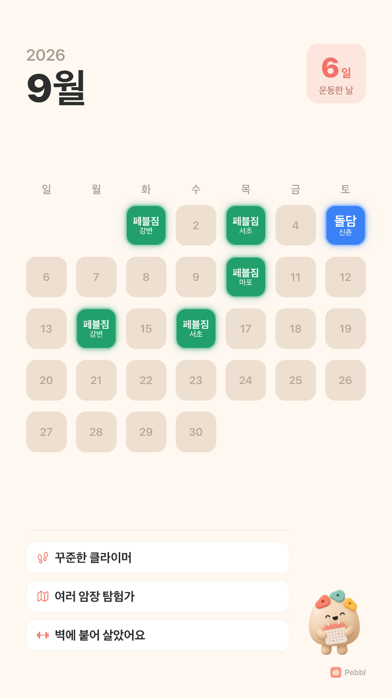
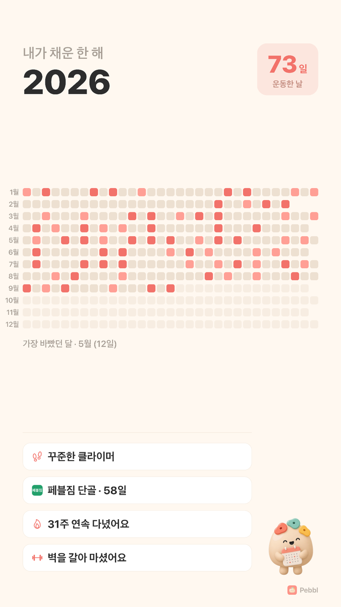
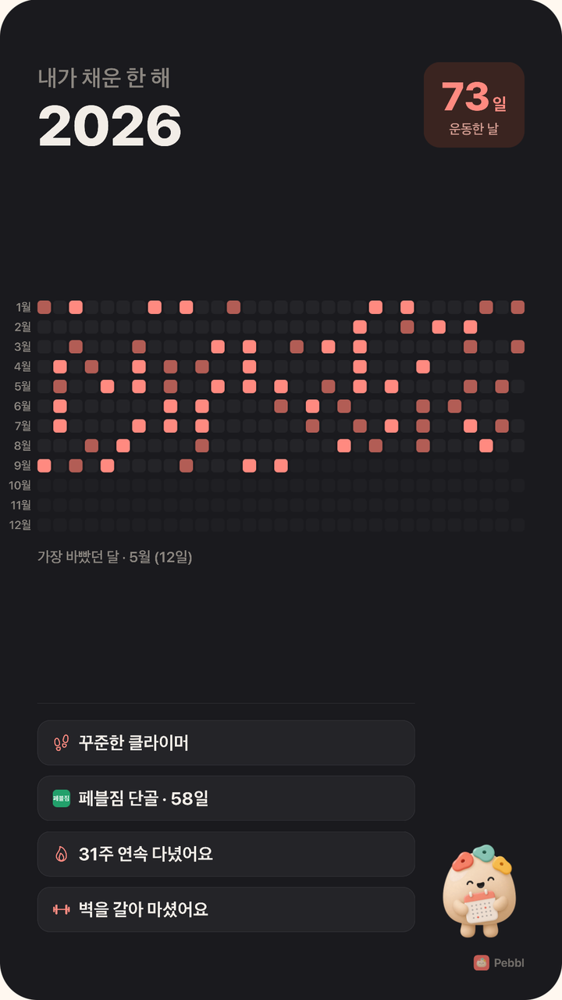
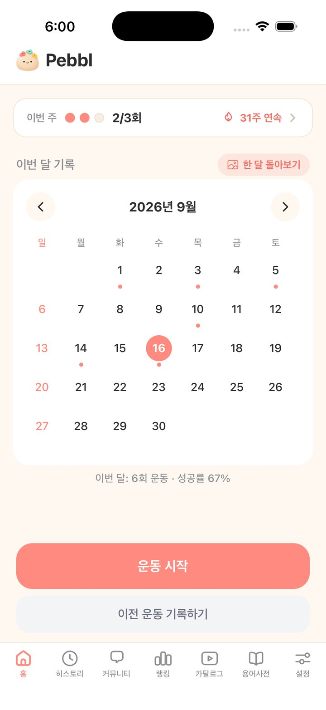
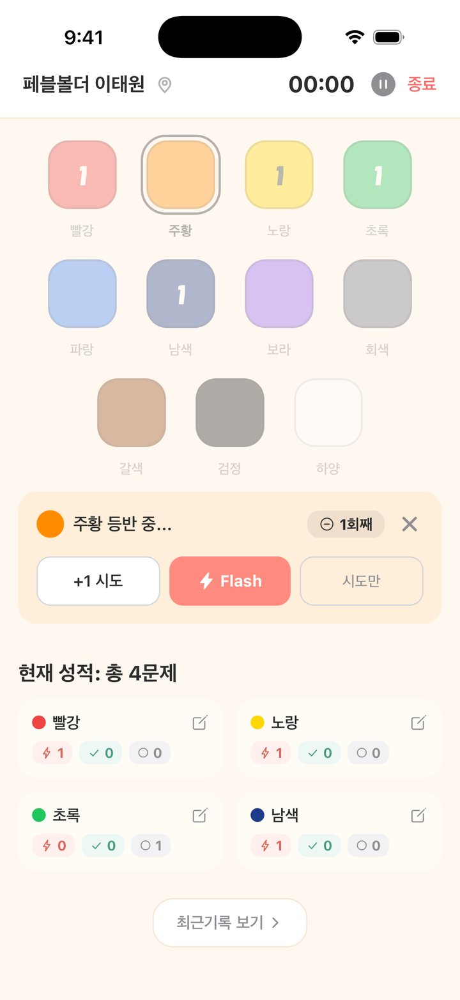
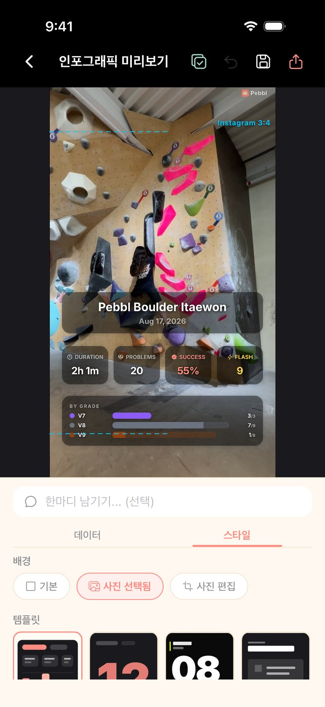
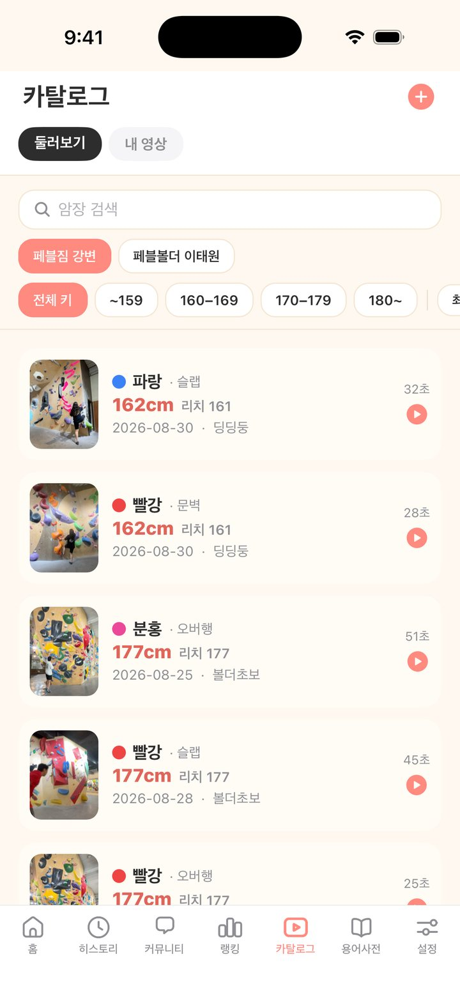
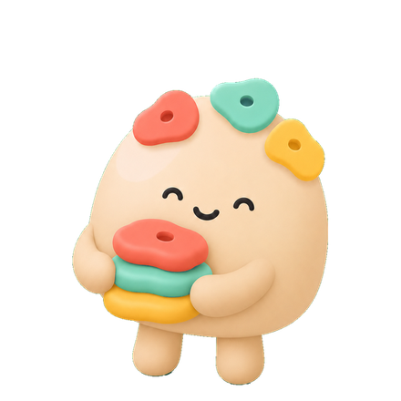

볼더링 기록 앱
오늘의 완등은 인포그래픽으로, 한 달·한 해는 카드 한 장으로.
기록하고, 꾸미고, 스토리에 올리세요.
iOS 정식 출시 · Android는 비공개 테스트 중이에요



벽 앞에서 오래 붙잡고 있을 앱이 아니에요. 난이도 색 한 번, 결과 한 번이면 끝.



운동이 끝나면 기록이 그대로 인포그래픽이 돼요. 사진이나 영상을 배경에 깔고, 인스타에 맞는 비율로 저장하세요.
같은 암장, 같은 문제를 푸는 사람들. 나와 비슷한 사람의 풀이가 제일 참고가 돼요.

받기 전에 궁금할 만한 것들이에요.
네, 전부 무료예요. 광고도 없고 결제 항목도 없어요.
네. 운동 기록, 인포그래픽, 돌아보기 카드는 로그인 없이 바로 쓸 수 있어요. 로그인하면 기록이 서버에 백업돼 기기를 바꿔도 따라오고, 랭킹·커뮤니티·카탈로그를 쓸 수 있어요.
지금은 비공개 테스트 중이에요. 테스트 참여 방법은 Android 안내 페이지에 있어요. 영상 저장 기능은 iOS에서만 지원돼요.
올린 날로부터 50일이 지나면 자동으로 삭제돼요. 그 전에 직접 지울 수도 있어요.
앱에서 암장 이름과 난이도 색을 직접 등록해 바로 기록할 수 있어요. 공식 암장 목록에 추가되길 원하면 문의로 알려주세요.

로그인 없이도 바로 기록할 수 있어요. 로그인하면 기기를 바꿔도 기록이 따라와요.